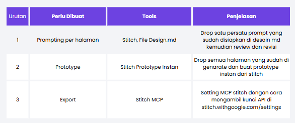
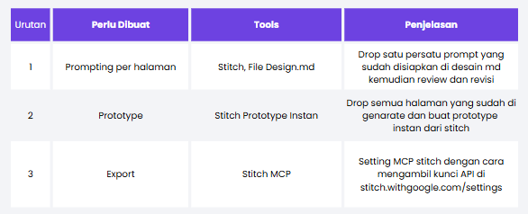
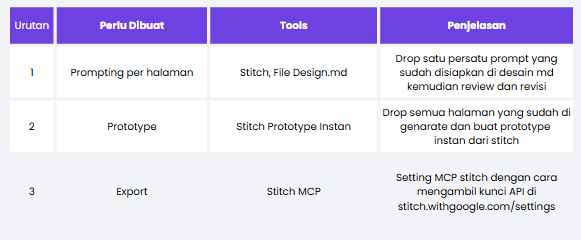

Modul 2: Desain Prototype

2.1 Prompting per halaman
Mari kita mulai merancang prototype web kita! Ikuti langkah-langkah panduan praktis berikut untuk melakukan setting design system dan prompting halaman demi halaman:
Langkah 1: Mengatur Design System (Setting Desain md)
Sebelum mulai memasukkan prompt halaman, hal pertama yang harus dilakukan adalah melakukan
konfigurasi design system awal pada generator workspace. Aturlah variabel visual seperti
palet warna utama (brand colors), pilihan font, ukuran spacing/padding, dan border radius
agar sesuai dengan dokumen design.md yang telah dibuat di Modul 1.
Langkah 2: Memulai Prompt Halaman Pertama
Setelah workspace siap, mulailah dengan menyalin dan memasukkan (drop) prompt lengkap untuk halaman utama (misal: Landing Page). Ini akan memandu AI dalam membangun kerangka layout awal yang sesuai dengan kebutuhan produk.
Langkah 3: Memperbaiki Section yang Kurang
Jangan khawatir jika hasil render pertama tidak langsung sempurna. Jika ada bagian atau section yang kurang lengkap atau tidak sesuai, Anda bisa melakukan prompt revisi khusus pada halaman pertama tersebut untuk menambahkan detail section yang terlewat.
Langkah 4: Melanjutkan Prompt Halaman Berikutnya
Apabila halaman pertama sudah dirasa cukup pas, barulah Anda melanjutkan proses prompting untuk halaman-halaman berikutnya secara berurutan agar alur navigasinya terbentuk dengan logis.
Langkah 5: Quick Edit untuk Menyamakan Komponen
Jika ada yang berbeda (misalnya footer) bisa diklik quick edit dan samakan dengan page sebelumnya. Untuk menghasilkan output yang spesifik, kita harus tau nama komponen yang akan kita rubah, kita bisa lihat di https://component.gallery/.
Langkah 6: Menambahkan Gambar atau Aset Mandiri
Jika ada gambar ilustrasi atau ikon yang tidak ditemukan atau tidak tampil dengan benar saat proses generate, Anda bisa mengunggah (upload) aset gambar Anda sendiri secara mandiri untuk melengkapinya.
Langkah 7: Merapikan Navbar dan Detail Penulisan
Luangkan waktu sejenak untuk memeriksa navbar menu, tautan-tautan link antar halaman, serta kerapian penulisan kata agar situs prototype Anda terlihat bersih, profesional, dan mudah digunakan.
Langkah 8: Menyelesaikan Halaman Lainnya
Lanjutkan proses prompting ini untuk halaman-halaman selanjutnya satu demi satu hingga seluruh modul rancangan selesai dibuat secara utuh.
Langkah 9: Menambah Halaman yang Terlewat
Jika di tengah jalan Anda merasa ada halaman penting yang terlewat, jangan ragu untuk kembali lagi ke Gemini untuk meminta bantuan merumuskan prompt baru khusus untuk halaman tambahan tersebut.
2.2 Prototype

Langkah selanjutnya adalah merakit halaman-halaman yang sudah dibuat menjadi satu alur interaktif.
Anda dapat menggunakan fitur Stitch Generate Prototipe Instan. Caranya adalah dengan memilih seluruh halaman yang telah Anda rancang di workspace, kemudian klik tombol Generate Prototipe Instan untuk menghubungkan navigasi antar halaman secara otomatis.
2.3 Setup dan Export MCP

Berikut adalah langkah-langkah untuk melakukan setup dan melakukan ekspor Model Context Protocol (MCP) di Google Stitch:
Langkah 1: Akses Pengaturan Stitch
Masuk ke halaman pengaturan Google Stitch di https://stitch.withgoogle.com/settings.
Langkah 2: Siapkan MCP Baru
Buat konfigurasi MCP baru di workspace Anda, kemudian salin (copy) tautan integrasi unik yang disediakan.
Langkah 3: Salin Prompt Halaman
Kembali ke halaman utama workspace Anda, pilih halaman visual yang ingin diekspor sebagai MCP, lalu salin prompt ekspornya.